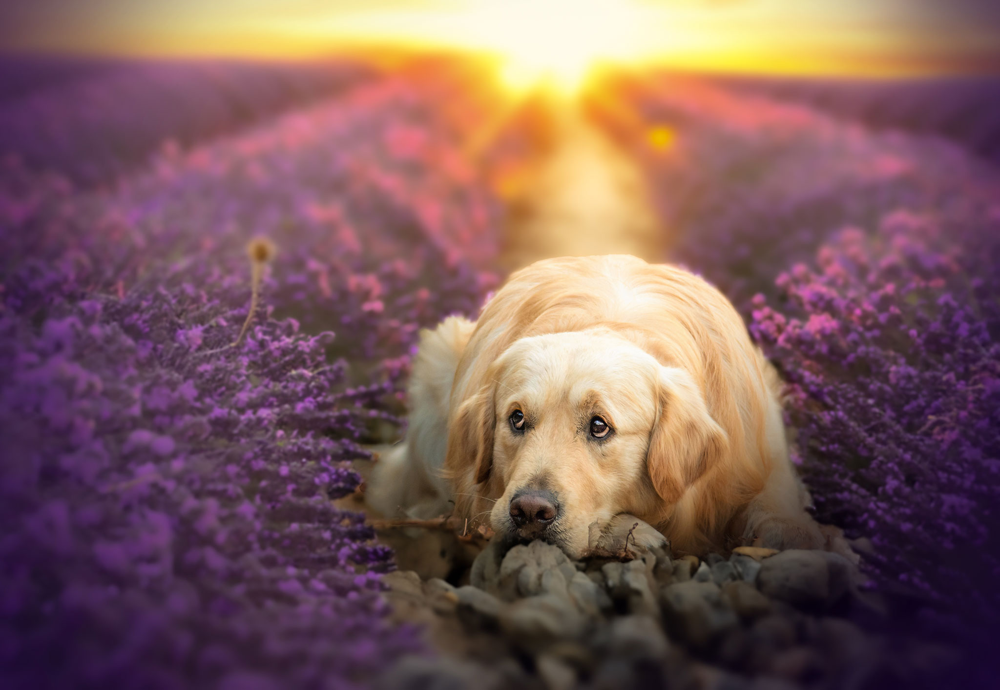
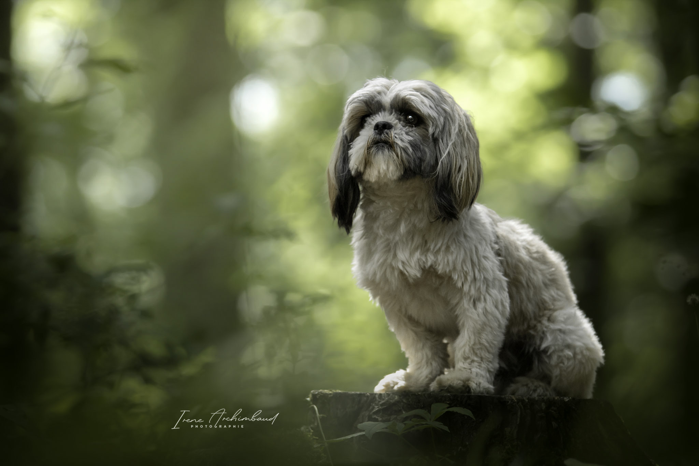

Je réserve
Formule Découverte
Environs 45min de shooting photo
3 photos numériques retouchées au format WEB et HD
25€ par photos supplémentaires
70€

Formule Unique
Environs 1h30 de shooting photo
6 photos numériques retouchées au format WEB et HD
20€ par photos supplémentaires
130€

Je réserve
Formule Exception
Environs 1h30 de shooting photo
10 photos numériques retouchées au format WEB et HD
15€ par photos supplémentaires
200€